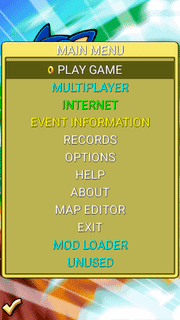
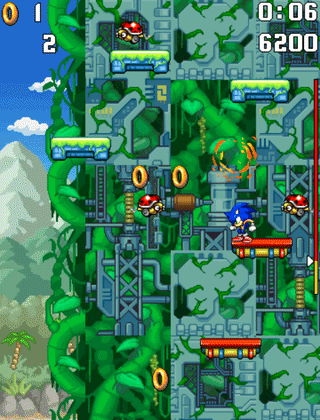

Sonic Jump Revival features cheat codes that serve different purposes. This page explains how to use the cheat codes and what consequences they have.
If you want to access all cheats, it's recommended to use a keyboard.

Sonic Jump Revival features cheat codes that serve different purposes. This page explains how to use the cheat codes and what consequences they have.
If you want to access all cheats, it's recommended to use a keyboard.
The main cheat has been present since Sonic Jump Anniversary (v2.0.0) and serves different purposes.

To activate the cheat, press 7 times the BACK button of the Android navigation bar or on your game controller during the loading screen, title screen or main menu. When using a keyboard, press the F1 key 7 times anywhere in the game to get the same result.
Once the cheat is activated, additional options written in cyan are available in certain menus. The hidden features include a Multiplayer mode, Mod Loader, Shadow Story mode, J2ME sprites, and more.
To learn more about the hidden features, check out the Hidden Features menu.

Once the cheat activated, you can have access to every stage in the game and get all Chaos Emerald shards (except the last one).
If the Bonus Zone doesn't show up in the stage select menu, press the BACK button again to make it appear.

After activating the cheat, pressing the BACK button during a stage will make you clear the stage instantly. Clearing a stage this way also makes you earn 50 rings, allowing you to earn an emerald shard, in case you haven't got one.
You can even use this cheat during Speedrun Mode to clear stages quickly.
When using a keyboard, press the * (STAR) key on your keyboard without earning rings. Press the 0 key on the numpad to earn 10 rings.

After activating the cheat, pressing the N key on the keyboard to change the language instantly.
DISCLAIMER:
This feature may be unstable.
The game may stop working when using this feature.

The Invicibility cheat allows the playable character to become invulnurable to damage and attack enemies on impact, even when the character is not curling into a ball.
This cheat is only accessible by using a keyboard. Press the F2 key 7 times to make the playable character invincible. When this cheat is activated, the life icon at the top-left corner of the screen blinks.

The counters are used to showcase information about the scrolling position and character coordinates during a stage. This cheat can only be activated using a keyboard.
In the original AirPlay version of Sonic Jump, only the scrolling position is displayed once the main cheat is activated. But in Sonic Jump Revival, new counters has been added (character velocity, X-position and Y-position) and this cheat can be activated differently.
To use this cheat, press the F3 key to display or hide those counters.